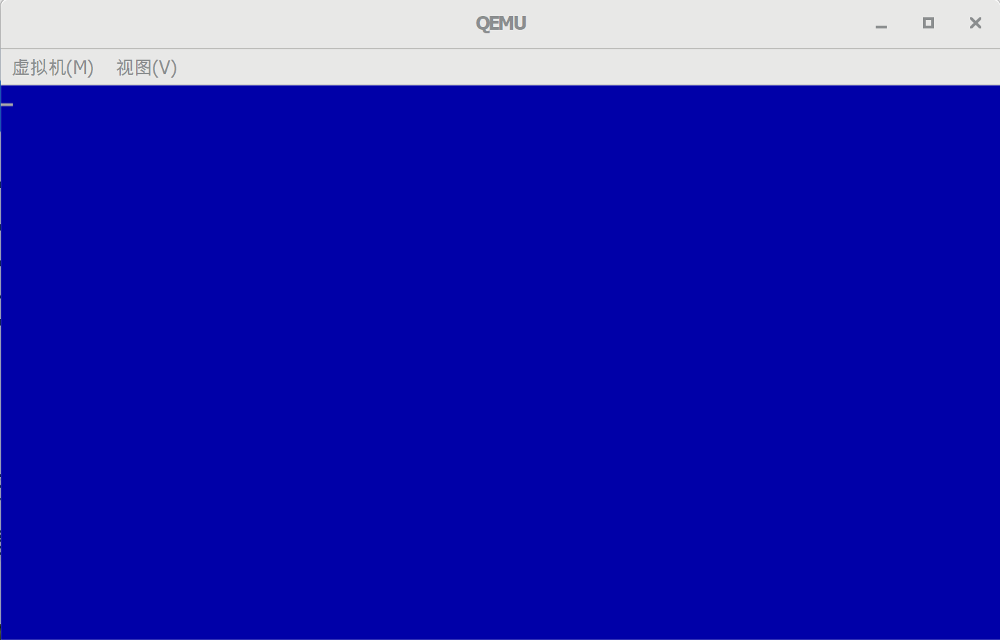

清屏
[TOC]
需要的工具
qemu: qemu
(windows版本：https://qemu.weilnetz.de/w64/2021/)
BIOS中断清屏
清屏是通过BIOS中断，来滚动屏幕，达到清屏的效果。
1. BIOS中断滚屏
中断 int 10h，AH = 06H / 07H
| 寄存器 |
说明 |
值 |
| AH |
功能编码 |
向上滚屏：06H，向下滚屏 : 07H |
| BH |
空白区域的缺省属性 |
|
| AL |
滚动行数 |
0：清窗口 |
| CH、CL |
滚动区域左上角位置：Y坐标，X坐标 |
|
| DH、DL |
滚动区域右下角位置：Y坐标，X坐标 |
|
例如：使用蓝底白字清屏
1
2
3
4
5
6
7
8
|
;---------------------------
;清除屏幕
mov ah,0x06
mov al,0
mov cx,0
mov df,0xffff
mov bh,0x17 ;属性为蓝底白字
int 0x10
|
2. BIOS中断设置光标位置：
中断 int 10h
功能描述：用文本坐标下设置光标位置
入口参数：
| 寄存器 |
说明 |
值 |
| AH |
功能编码 |
设置光标位置：02H |
| BH |
显示页码 |
|
| DH，DL |
行，列 (Y坐标，X坐标) |
|
例如：设置光标到第一行第一列
1
2
3
4
5
6
|
;---------------------------
;光标位置初始化
mov ah,0x02
mov bh,0
mov dx,0
int 0x10
|
实现
1. 代码
boot.asm内容如下
1
2
3
4
5
6
7
8
9
10
11
12
13
14
15
16
17
18
19
20
21
22
23
24
25
26
27
28
29
30
31
32
33
34
35
36
37
38
39
40
|
; GloxOS BOOT
[bits 16]
org 0x7c00 ; 指明程序的偏移的基地址
jmp Entry ; 跳转到程序入口
db 0x90
db "GLOXBOOT"
; ----------------------------
; 程序入口
; ----------------------------
Entry:
; ---------------------------
; 清除屏幕
; ----------------------------
mov ah,0x06
mov bh,0x07
mov al,0
mov cx,0
mov dx,0xffff
mov bh,0x17 ; 属性为蓝底白字
int 0x10
; ---------------------------
; 光标位置初始化
; ----------------------------
mov ah,0x02
mov bh,0
mov dx,0
int 0x10
Fin:
hlt
jmp Fin ; 进入死循环，不再往下执行。
Fill_Sector:
resb 510-($-$$) ; 处理当前行$至结束(1FE)的填充
db 0x55, 0xaa
|
创建build.sh脚本
1
2
3
4
5
6
|
#!/bin/bash
NASM=nasm
$NASM -f bin -o build/boot.bin boot/boot.asm
dd if=/dev/zero of=build/gloxos.img bs=512 count=2880
dd if=build/boot.bin of=build/gloxos.img bs=512 count=1 conv=notrunc
|
编译成gloxos.ima镜像文件。
运行
创建run.sh脚本
1
2
3
4
|
#!/bin/bash
QEMU=qemu-system-x86_64
$QEMU -m 128 -rtc base=localtime -fda build/gloxos.img
|
执行run.sh脚本
结果如图

代码地址
https://github.com/sxt102400/ratsos/tree/master/chapter2.4